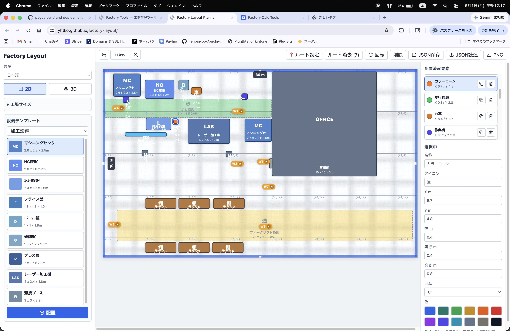
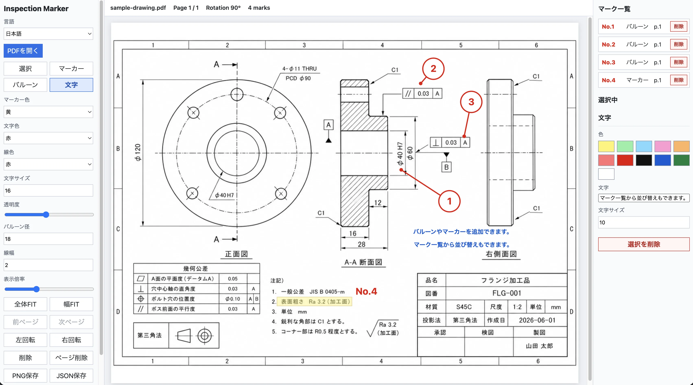
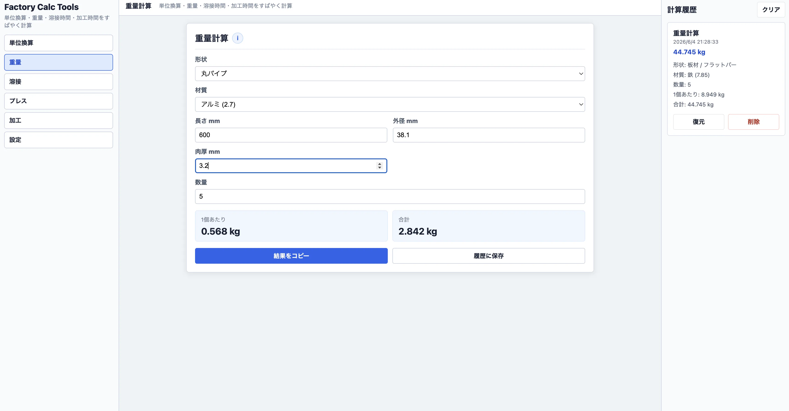
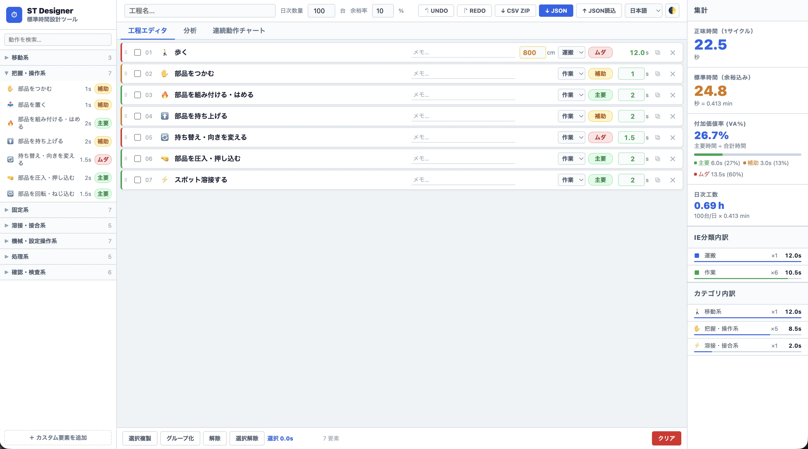

グリッドスナップ付きのドラッグ＆ドロップで設備を配置。ズーム・パンで広い工場も快適に編集できます。
Three.jsによるリアルタイム3Dビュー。歩行視点・プレゼンモードでステークホルダーへの説明に活用できます。
マシニングセンタ・コンベア・安全柵など、工場でよく使う設備テンプレートを即座に配置できます。
レイアウトをJSONで保存・読み込み。PNG形式でエクスポートして図面資料として活用できます。

手持ちのPDF図面をそのままブラウザに読み込み。原寸比率を保ったまま表示できます。
矢印・丸・四角などのマーカーを図面上に配置。番号付きで測定ポイントを明示できます。
各マーカーに検査コメントや寸法値を紐付け。テキストは図面上に直接表示されます。
OK / NG / 要確認の色分けマーカーで検査結果をひと目で把握。現場レビューに活用できます。
ForgeKit — 工場計算ツール集
単位変換・材料重量・溶接時間・加工時間など、製造現場で使う計算をタブ切り替えでまとめて実行。多言語対応で海外工場でも活用できます。
ツールを開く →
長さ・重さ・圧力・温度・面積・体積など多種の単位を即座に変換。現場でよく使う組み合わせを網羅しています。
板材・丸棒・パイプなど各種形状の金属重量を材質・寸法から算出。発注量や荷重検討に活用できます。
溶接パラメータ（速度・長さ・パス数）から作業時間とガス使用量を概算。工程計画の精度向上に貢献します。
切削条件（回転数・送り・加工距離）から機械加工時間を計算。見積もりや稼働計画の根拠データとして使えます。
日本語・英語・タイ語・インドネシア語・中国語に対応。海外拠点や多国籍チームでもそのまま使えます。
計算結果をワンクリックでコピー。よく使う設定を保存しておけば次回すぐに呼び出せます。
ST Designer — 標準作業時間設計ツール
動作要素をパネルからクリックするだけで工程を積み上げ、正味時間・標準時間・VA率を自動集計。パレート図・ガントチャートで作業のムダを即座に可視化できます。
ツールを開く →


移動・把握・固定・溶接など8カテゴリ・40種類以上の標準要素を用意。クリックするだけで工程に追加でき、カスタム要素も登録できます。
余裕率を設定するだけで正味時間から標準時間を自動算出。日次工数・VA率もリアルタイムで更新されます。
時間の長い要素を自動ソートしてパレート図を表示。VA（主要）／SV（補助）／NVA（ムダ）の色分けで改善対象が一目でわかります。
工程全体の時間軸を可視化するガントチャートを生成。要素単位・グループ単位で切り替えて工程バランスを分析できます。
ドラッグ＆ドロップで要素を並び替え、関連動作をグループ化。UNDOにも対応しているので安心して編集できます。
工程データをJSONで保存・読み込み。要素一覧・集計・ガントチャートをCSV ZIPでエクスポートして報告書に活用できます。
Product Photo Cleaner — 背景除去ツール
画像をサーバーへ送らず、ブラウザ内で背景除去とマスク修正を行います。AIモデルが自動で被写体を切り抜き、透過PNG・白背景・黒背景・グレーで出力できます。
ツールを開く →@imgly/background-removal モデルをブラウザ内で実行。画像データは一切サーバーへ送信せず、完全ローカルで処理します。
ポリゴンで囲んで前景・背景を追加／削除。島（連続領域）単位でのワンクリック切替にも対応しています。
透過PNG・白背景・黒背景・検査グレーの4種から選んでコピーまたは保存。ECサイト用途から品質検査資料まで対応します。
処理した画像を IndexedDB に自動保存。サムネイル一覧からワンクリックで再コピーまたはダウンロードできます。
元画像＋結果の比較表示・結果のみ・元画像の3モードを切り替えてマスクの精度を確認しながら編集できます。
日本語・英語・タイ語・インドネシア語・中国語に対応。海外工場の商品撮影ラインでもそのまま使えます。